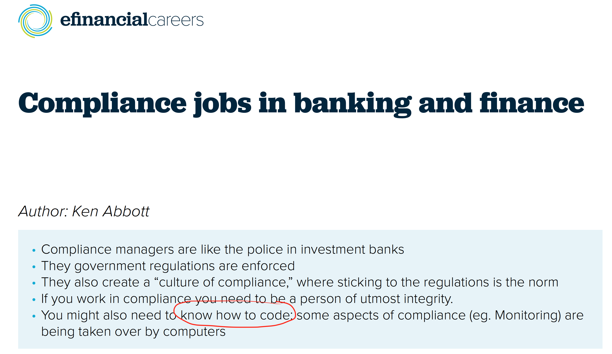
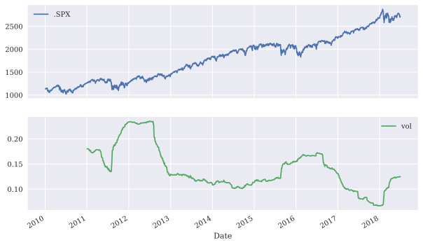

Why Python and finance?#
Being able to code, even just a little, is becoming an integral part of finance. Everything is tech now.
I think of finance career paths as having two stages. First, you get paid for what you know, helping your team, and how fast you can do it. Then, you get paid for convincing other people that your ideas make sense, that your firm’s product is the best, that you can make money. Now is the time to work on Stage One and learn as much as we can.
Want to work at a bank? Coding is a key skill.
Want to trade? There are basically no traders left who can’t code. Algorithms are even coming for the bond markets.
As Python takes hold, Hampson said the profile of people working on trading floors is changing. “The trading floor of the future will still have humans, but those humans will be different to the people you have today.” Future traders will have hybrid skills covering finance, quantitative knowledge and the ability to automate processes and extract data, said Hampson. Today’s top traders already have, “much more universal skillsets - they understand data, they understand finance, they understand how to code. That brings an agility that you didn’t see until about five years ago.”
Fig. 1 Might as well learn now!#
Most of the largest hedge funds are quant driven, whether that be more algorithmic or systematic-based strategies. And, if you think that you might be allocating assets to hedge fund strategies, then you’ll want to better understand what they are doing.
Wealth management? Roboadvisors (and traditional firms) are using model portfolios that are rebalanced automatically. Some wealth management firms have data scientists.
Even the traditional firms, like Vanguard are hiring for data analysts. And they have their own digital advisor too.
And, of course, most firms now have their own analytics teams. And CFO and CIO roles can get blended together as firms use more advanced data capabilities to forecast and plan. You can even get some pretty unique cases in the finance industry.
What are we going to do?#
We are going to learn Python because it is ubiquitous in finance. It’s not the fastest language, or the latest. But, it is the one everyone kind of assumes that you will know if you look for a more technical role.
I want to prove to you that Python, and coding more generally, is extremely helpful even outside of a purely technical role. Python and Excel even go well together! And you don’t have to be a computer science major to get these skills, though that never hurt anyone. Life-long learning is important, even for Goldman MDs apparently.
We are going to cover material that might be found in a data science or analytics curriculum, but from a finance perspective. There’s domain knowledge, which helps us know what questions to ask. Don’t under estimate this part – too many people go right to running a regression or, worse, some fancy machine learning thing without knowing the what and why. There’s coding knowledge, the Python part. And then there’s the statistics knowledge, which tells you what to code to answer the question. Few people (no one?) is an expert in all parts, which is why data-oriented teams are so interdisciplinary and filled with physics majors, biostats, computer scientists, and folks with a more traditional business background.
These jobs are changing too, though. Data engineering, or how to manage real-time data pipelines (e.g. the ETL process) is very important. You can’t answer data questions if your data are wrong!
Before you start a sales and trading internship, I’d also suggest that you make sure you know quite a bit about Excel, Python and VBA. - Those three things will really make a difference to your ability to do real work.
Our textbook and these notes cover the basics of Python, enough to be dangerous. We’ll learn how to get our data into Python, how to clean it, how to visualize it, how to explore it, and how to use it. We’ll learn how to integrate our code with our finance knowledge, creating Markdown reports that combine code, output, and text. We’ll cover a variety of statistical techniques, such as linear regression, logit models, and monte carlo simulation. Some of what we do will fall under the umbrella of machine learning. We’ll learn about different aspects of finance as we go, such as factor models, risk management, and options. We might even get to some trading models.

Fig. 2 Even jobs that don’t seem like tech, have some coding these days.#
For example, this DataCamp tutorial on algorithmic trading in finance has a simple example of how to combine coding with a basic trading strategy.
Finally, I’ll also cover some of the basic tools of coding. We’ll discuss git and Github, IDEs such as Codespaces and VS Code, and AI tools, like Github Copilot. These skills will be used in any coding environment.
A first look at Python#
Let’s use an example from Chapter 1 of Python for Finance, 2e, just to see what Python can help us with. We’ll bring in some data and make a graph of prices and volatility. Something that comes up all the time. Python makes this not just easy - by writing down the code, we have a reproducible example. Compare this to Excel, where it can be difficult, if not impossible, to tell how someone got from start to finish. Our code gives us a recipe for how to do something.
# Bring in the packages that we need.
import numpy as np
import pandas as pd
from pylab import plt, mpl
# Set up some graphics configuration. Just changes things from the default.
plt.style.use('seaborn-v0_8')
mpl.rcParams['font.family'] = 'serif'
%config InlineBackend.figure_format = 'svg'
# Read in some eod prices and select just the S&P 500
data = pd.read_csv('../data/tr_eikon_eod_data.csv',
index_col=0, parse_dates=True)
data = pd.DataFrame(data['.SPX'])
data.dropna(inplace=True)
data.info()
<class 'pandas.DataFrame'>
DatetimeIndex: 2138 entries, 2010-01-04 to 2018-06-29
Data columns (total 1 columns):
# Column Non-Null Count Dtype
--- ------ -------------- -----
0 .SPX 2138 non-null float64
dtypes: float64(1)
memory usage: 33.4 KB
# Calculate returns and vol, creating two new columns of data. We'll use rolling 252 day periods to capture volatility. We multiply by the standard deviation of 252 to annualize the vol.
data['rets'] = np.log(data / data.shift(1))
data['vol'] = data['rets'].rolling(252).std() * np.sqrt(252)
# Make a graph
data[['.SPX', 'vol']].plot(subplots=True, figsize=(10, 6));
